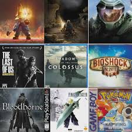

Gaming is usually played on
three kinds of platforms: a video game console, PC or mobile device.
All can be played by people individually or with multiple players locally
or over the internet.A video game console is a dedicated device to play video games.


With advanced technology and visual representations, these games help to enhance the learning skills in children. Multi-tasking skills are also improved by online gaming. However, the harmful effects that the gadgets on which these games are played cause on the eyes of a person cannot be ignored.